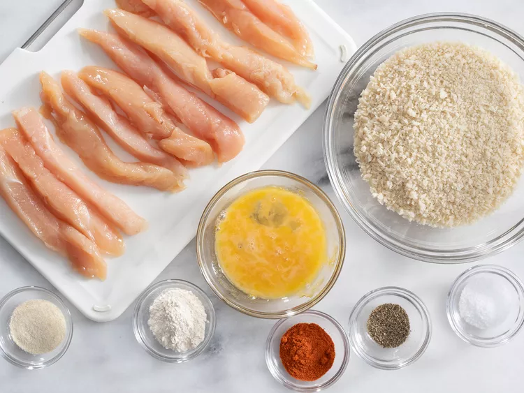
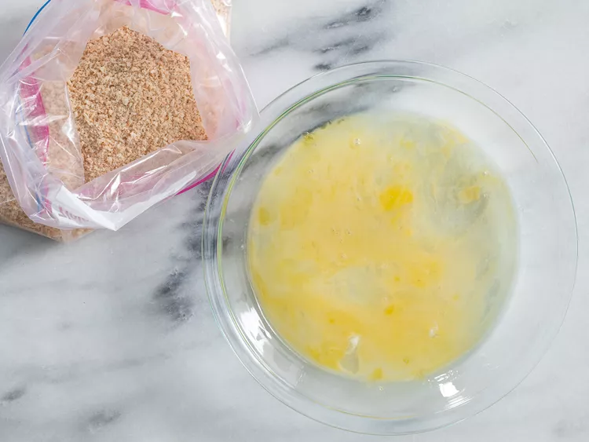
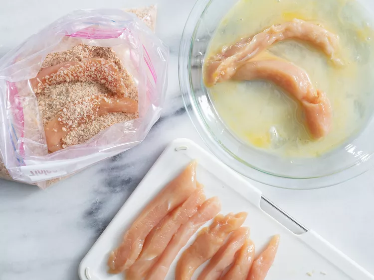
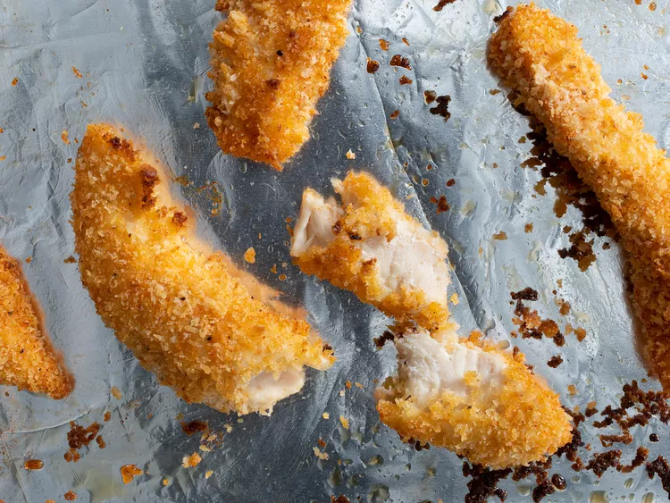

Easy Baked Chicken Tenders

These baked chicken tenders have a deliciously crispy panko bread crumb coating for that extra crunch factor without the guilt of frying! You can marinate the tenders in light buttermilk in the refrigerator for 1 hour instead of dipping in the beaten egg.
If you're in need of a kid-friendly dinner that will please even the pickiest of eaters, you're in luck. These baked chicken tenders couldn't be simpler to make—and they're a healthier option than deep-fried chicken. Skip the drive-thru and try this no-fuss dinner that everyone at your table will love.
Ingredients
- cooking spray
- 1 large egg, beaten
- 1 ¼ cups panko bread crumbs
- 2 teaspoons garlic powder
- 1 teaspoon onion powder
- 1 teaspoon ground paprika
- 1 teaspoon kosher salt
- 1 teaspoon ground black pepper
- 4 skinless, boneless chicken tenders, cut into 1/2-inch strips lengthwise
Directions
- gather all ingridients.

- Preheat the oven to 450 degrees F (230 degrees C). Line a baking sheet with aluminum foil and spray with cooking spray.
- Place egg in a shallow dish. Place panko, garlic powder, onion powder, paprika, salt, and pepper into a large zip-top freezer bag and mix well.

- Dip 2 chicken strips into egg, then place into panko mixture and shake to coat. Place coated chicken pieces onto the prepared baking sheet. Repeat with remaining chicken.

- Spray each chicken tender with cooking spray twice.
- Bake tenders in the preheated oven for 7 minutes. Flip and continue to bake on opposite side until no longer pink in the centers, about 7 minutes more. Remove from the oven.
- Set an oven rack about 6 inches from the heat source and preheat the oven's broiler.
- Broil tenders in the preheated oven for extra crunch, about 1 to 2 minutes more.

- Serve hot and enjoy!